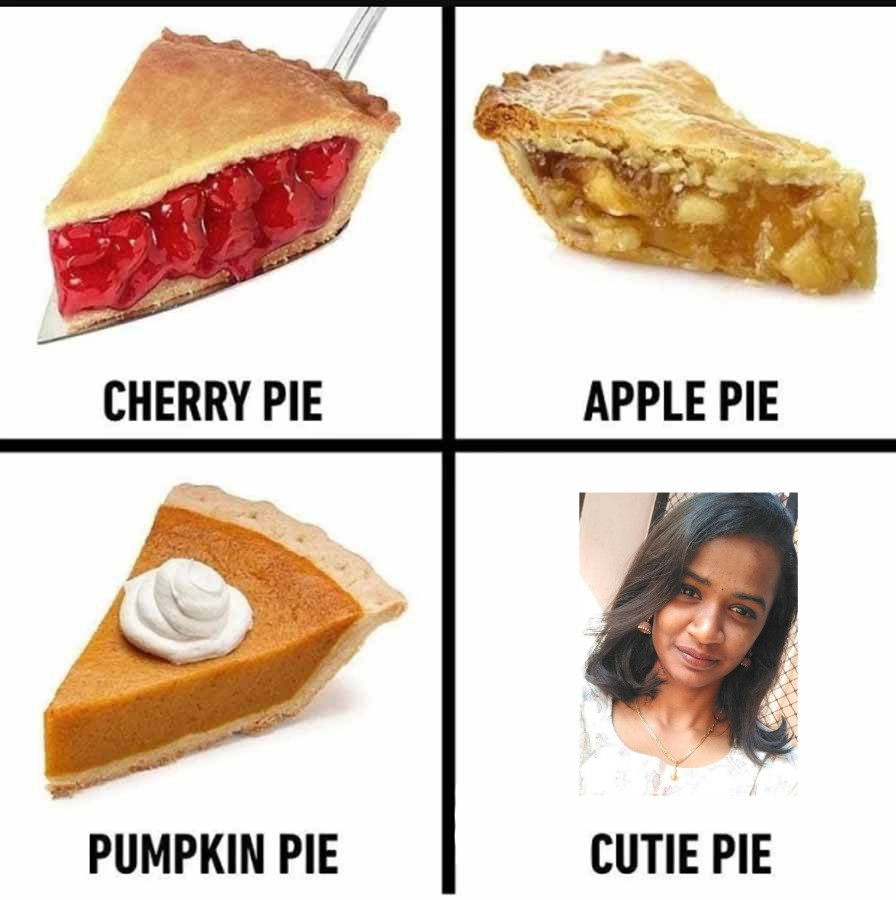
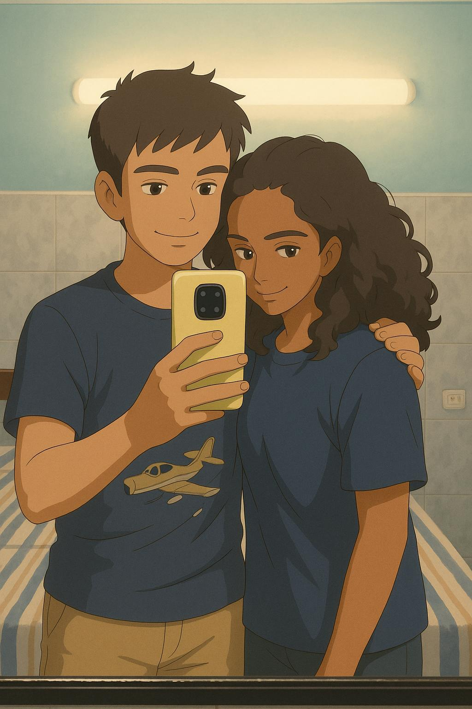
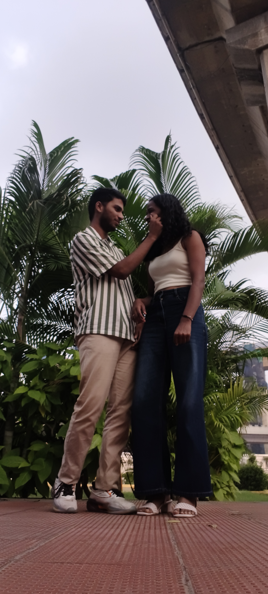
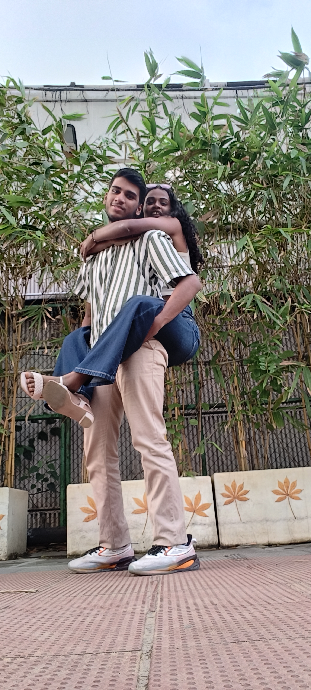

<!DOCTYPE html>
<html lang="en">
<head>
  <meta charset="UTF-8">
  <meta name="viewport" content="width=device-width, initial-scale=1.0">
  <title>Carousel & Poems</title>
  <link href="https://cdn.jsdelivr.net/npm/bootstrap@5.3.2/dist/css/bootstrap.min.css" rel="stylesheet" />
  <style>
    body {
      background: linear-gradient(135deg, #e3d9ff, #f8efff);
      font-family: 'Segoe UI', sans-serif;
    }
    .carousel-item img {
      width: 100%;
      height: 550px;
      object-fit: cover;
      border-radius: 12px;
    }
    .poem-box {
      margin-top: 60px;
      padding: 25px;
      background: rgba(255, 255, 255, 0.5);
      backdrop-filter: blur(10px);
      border-radius: 16px;
      box-shadow: 0 8px 20px rgba(0,0,0,0.12);
      transition: transform 0.8s ease, opacity 1s ease;
      opacity: 0;
      transform: translateY(40px);
    }
    .poem-title {
      font-weight: 600;
      font-size: 1.4rem;
      margin-bottom: 8px;
    }
    .poem-text {
      font-size: 1.05rem;
      white-space: pre-line;
    }
    /* Enhanced animations */
    .poem-box {
      animation: floatFade 1.6s ease forwards;
      opacity: 0;
    }

    @keyframes floatFade {
      0% { opacity: 0; transform: translateY(40px) scale(0.98); }
      60% { opacity: 1; transform: translateY(0px) scale(1.02); }
      100% { opacity: 1; transform: translateY(0px) scale(1); }
    }

    /* Depth elements */
    .depth-bg {
      position: fixed;
      top: 0; left: 0;
      width: 100%; height: 100%;
      background: radial-gradient(circle at 20% 30%, rgba(255,255,255,0.4), transparent 60%),
                  radial-gradient(circle at 80% 70%, rgba(200,150,255,0.3), transparent 60%),
                  radial-gradient(circle at 50% 50%, rgba(255,200,255,0.4), transparent 70%);
      z-index: -1;
      filter: blur(80px);
    }

    /* Carousel caption animation */
    .carousel-caption d-block"container mt-5">
  <div id="mainCarousel" class="carousel slide" data-bs-ride="carousel">
    <div class="carousel-inner">
      <div class="carousel-item active">
        
        <div class="carousel-caption d-block">
          <h5>Caption One</h5>
          <p>Description for the first image.</p>
        </div>
      </div>

      <div class="carousel-item">
        
        <div class="carousel-caption d-block">
          <h5>Caption Two</h5>
          <p>Description for the second image.</p>
        </div>
      </div>

      <div class="carousel-item">
        
        <div class="carousel-caption d-block">
          <h5>Caption Three</h5>
          <p>Description for the third image.</p>
        </div>
      </div>

      <div class="carousel-item">
        
        <div class="carousel-caption d-block">
          <h5>Caption Four</h5>
          <p>Description for the fourth image.</p>
        </div>
      </div>

      <div class="carousel-item">
        
        <div class="carousel-caption d-block">
          <h5>Caption Five</h5>
          <p>Description for the fifth image.</p>
        </div>
      </div>

      <div class="carousel-item">
        
        <div class="carousel-caption d-block">
          <h5>Caption Six</h5>
          <p>Description for the sixth image.</p>
        </div>
      </div>

      <div class="carousel-item">
        
        <div class="carousel-caption d-block">
          <h5>Caption Seven</h5>
          <p>Description for the seventh image.</p>
        </div>
      </div>

      <div class="carousel-item">
        
        <div class="carousel-caption d-block">
          <h5>Caption Eight</h5>
          <p>Description for the eighth image.</p>
        </div>
      </div>

      <div class="carousel-item">
        
        <div class="carousel-caption d-block">
          <h5>Caption Nine</h5>
          <p>Description for the ninth image.</p>
        </div>
      </div>
    </div>

    <button class="carousel-control-prev" type="button" data-bs-target="#mainCarousel" data-bs-slide="prev">
      <span class="carousel-control-prev-icon" aria-hidden="true"></span>
    </button>
    <button class="carousel-control-next" type="button" data-bs-target="#mainCarousel" data-bs-slide="next">
      <span class="carousel-control-next-icon" aria-hidden="true"></span>
    </button>
  </div>
</div>

<div class="container mt-5">
  <div class="poem-box" id="poem1">
    <div class="poem-title">Shattered Echo</div>
    <div class="poem-text">I held your name in my chest
like a fragile spark in a cold cave.
Every time it flickered,
I learned how silence can burn
more fiercely than fire.</div>
  </div>

  <div class="poem-box" id="poem2">
    <div class="poem-title">Quiet Hands</div>
    <div class="poem-text">Your absence sits beside me
as if it remembers my shape.
Sometimes the wind moves
like it is trying to finish
words you left unfinished.</div>
  </div>

  <div class="poem-box" id="poem3">
    <div class="poem-title">Window of Blue</div>
    <div class="poem-text">There was a day the sky broke open
and I wished I could gather it
piece by trembling piece,
and rebuild it the way you rebuilt me
without even knowing.</div>
  </div>

  <div class="poem-box" id="poem4">
    <div class="poem-title">Until the Quiet Ends</div>
    <div class="poem-text">I still wait for the moment
when the heart learns to unclench.
Grief bends, reshapes, teaches,
leaving its fingerprints on everything
that dared to love too deeply.</div>
  </div>
</div>

<script src="https://cdn.jsdelivr.net/npm/bootstrap@5.3.2/dist/js/bootstrap.bundle.min.js"></script>
<script>
  const poems = document.querySelectorAll('.poem-box');

  const observer = new IntersectionObserver(entries => {
    entries.forEach(entry => {
      if (entry.isIntersecting) {
        entry.target.style.opacity = 1;
        entry.target.style.transform = 'translateY(0px)';
      }
    });
  }, { threshold: 0.2 });

  poems.forEach(p => observer.observe(p));
</script>

<div class="depth-bg"></div>

<script src="https://cdn.jsdelivr.net/npm/bootstrap@5.3.2/dist/js/bootstrap.bundle.min.js"></script>
<script>
  const poems = document.querySelectorAll('.poem-box');

  const observer = new IntersectionObserver(entries => {
    entries.forEach(entry => {
      if (entry.isIntersecting) {
        entry.target.style.opacity = 1;
      }
    });
  }, { threshold: 0.2 });

  poems.forEach(p => observer.observe(p));

  /* Bootstrappy JS: Auto pause on hover + cycle control */
  const carousel = document.querySelector('#mainCarousel');
  const carouselObj = new bootstrap.Carousel(carousel, {
    interval: 3000,
    pause: 'hover',
    ride: 'carousel'
  });

  /* Soft parallax as you scroll */
  window.addEventListener('scroll', () => {
    const y = window.scrollY * 0.15;
    document.querySelector('.depth-bg').style.transform = `translateY(${y}px)`;
  });
</script>


<!-- Anniversary Letter Section -->
<div class="container mt-5">
  <div class="poem-box" id="anniversary-letter" style="animation: letterFloat 2.5s ease forwards; opacity:0;">
    <div class="poem-title">A Letter for Our One-Year Journey</div>
    <div class="poem-text">
Dear Love,

I find myself thanking the heavens the way sailors thank the stars —
not because they shine, but because they guide. For an entire year
you have been that quiet constellation, the one I never knew I needed
until the night felt too vast and you made it gentle.

If love were a river, yours is the one that remembers the path
when I forget mine. If hearts were gardens, yours is the place
where even my fears grow soft. And if prayers were hands,
then mine are always folded with your name resting between them.

I have walked through twelve months with you,
and each one felt like a whispered miracle.
A year may be counted in days, but this one —
it was counted in grace.

I thank God for you the way dawn thanks the horizon:
with quiet awe, with trembling light,
with the understanding that some blessings arrive
not loudly, but exactly when the soul is ready.

So here I stand, with a heart full and steady,
daring to ask:
Will you walk another year with me?

Forever yours.
    </div>
  </div>
</div>

<script>
  /* Additional poem animations */
  const animatedPoems = document.querySelectorAll('.poem-box');
  animatedPoems.forEach(p => p.style.opacity = 0);

  const observer2 = new IntersectionObserver(entries => {
    entries.forEach(entry => {
      if (entry.isIntersecting) {
        entry.target.style.opacity = 1;
        entry.target.style.animation = 'floatFade 1.6s ease forwards';
      }
    });
  }, { threshold: 0.2 });

  animatedPoems.forEach(p => observer2.observe(p));
</script>

</body>
</html>
